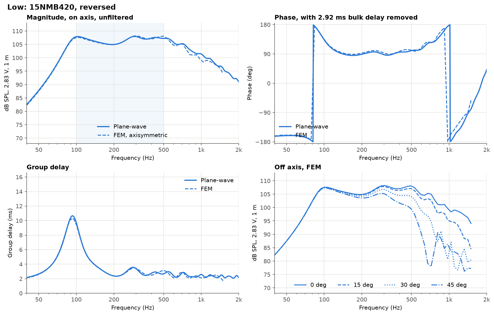
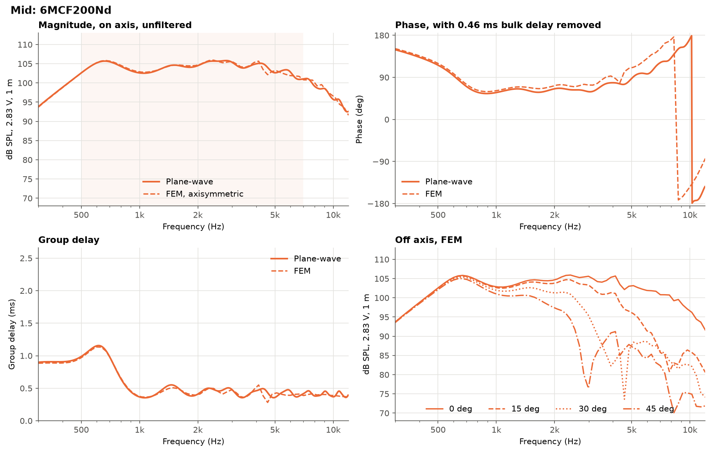
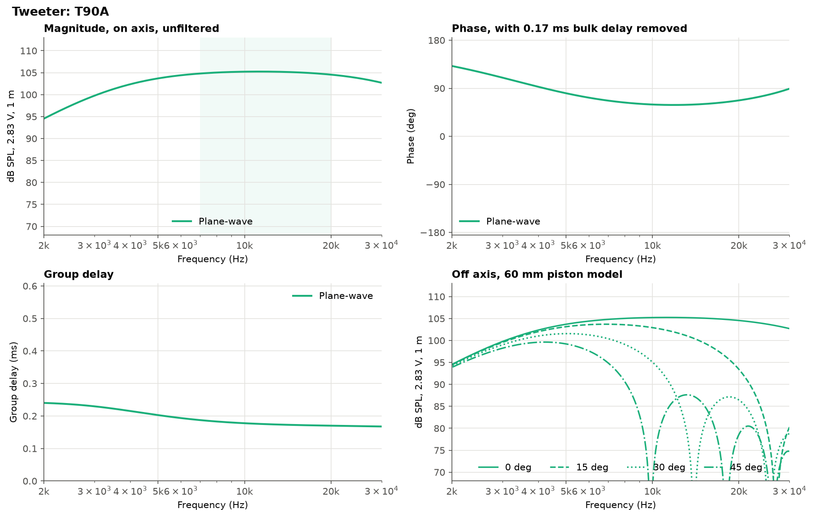
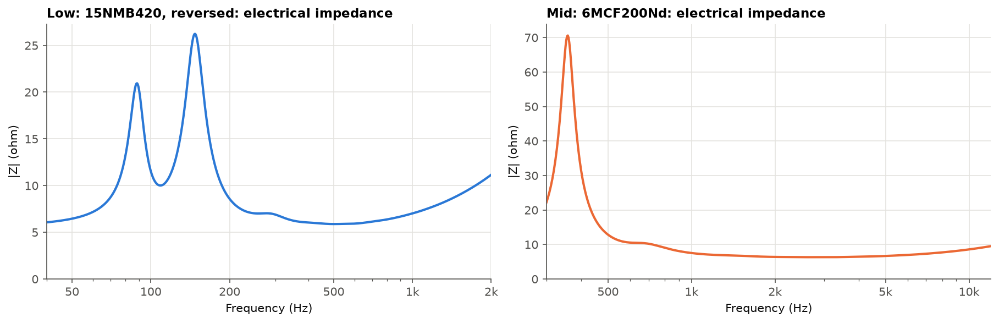
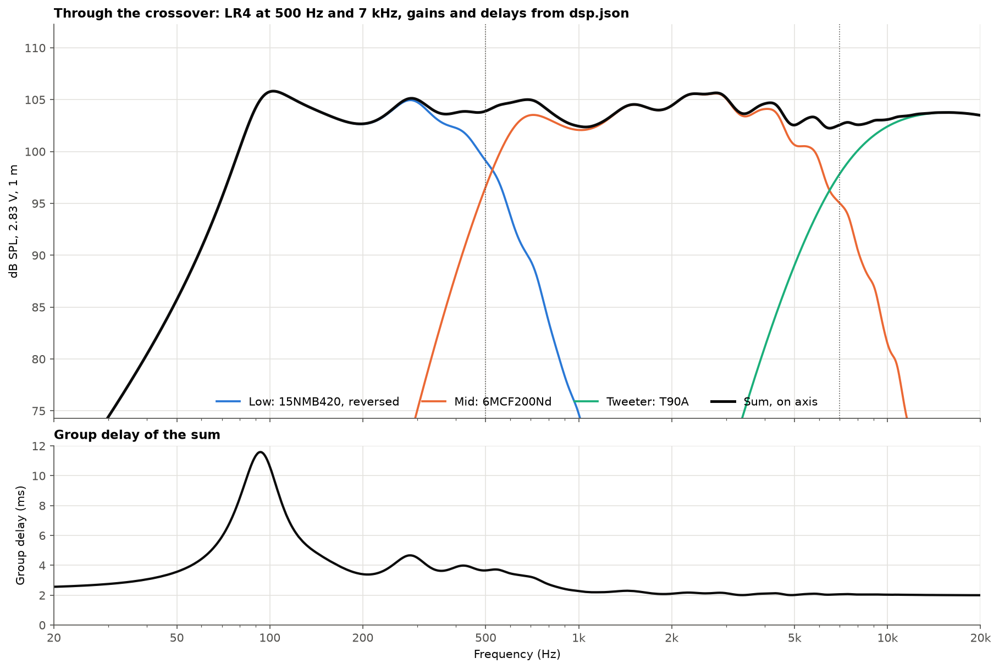
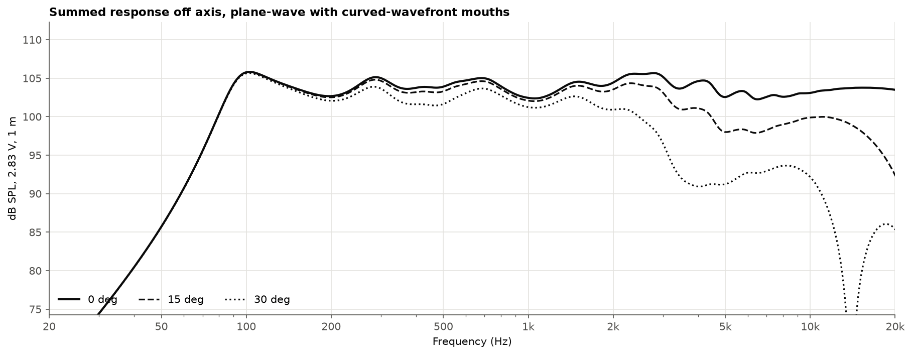

Simulation
Each section was simulated on its own, unfiltered, then summed through the crossover with the gains, delays and polarity a DSP would apply. All curves are at 2.83 V and 1 m.
Method
- Plane-wave horn model. Each horn is cut into a few hundred thin annular slices and cascaded as transfer matrices from throat to mouth, with the radiation load of a flanged piston at the mouth. Centre bodies are subtracted from the area slice by slice.
- Driver model. Each driver is a Thiele/Small motor with its sealed rear volume and the front chamber between cone and throat, solved for cone velocity and electrical impedance.
- Radiation. The mouth's far field includes the curvature of the wavefront in a conical or pyramidal horn. Treating the mouth as a flat piston gave false nulls off axis.
- FEM check. The mid and low horns were solved again with an axisymmetric Helmholtz finite-element model (dolfinx 0.8, quadratic elements) in a baffled half-space with an absorbing outer boundary. The FEM throat impedance and far field were coupled to the same driver models, so the two results differ only in the acoustics. The FEM code was first checked against the exact solution for a straight tube: median error 3% in throat impedance.
Low section

From 100 to 500 Hz the plane-wave model gives 3.0 dB variation at a mean of 106.7 dB. The FEM agrees within 0.8 dB in that band. The low horn stays usable to about 1 kHz on axis, which leaves room for the 500 Hz crossover. Off axis it narrows above about 500 Hz, roughly where the mid takes over.
Mid section

From 500 Hz to 7 kHz the plane-wave model gives 4.9 dB variation at a mean of 104.1 dB; FEM gives 4.2 dB with a mean difference of 0.03 dB and a largest difference of 1.9 dB. Coverage narrows to about plus or minus 20 degrees above 3 kHz, as expected for a conical horn with a 20 degree half-angle.
Tweeter

The tweeter's internal horn and ring diaphragm were not simulated. Its curves are a minimum-phase model of the published figures. The effect of sitting 25 mm inside the mid horn is not modelled beyond the extra path length. Measuring it in place is the first job after building.
Electrical impedance

FEM against plane-wave

| Section | Band | Largest on-axis difference | Mean difference | Variation, FEM | Variation, plane-wave |
|---|---|---|---|---|---|
| Low | 100 to 500 Hz | 0.84 dB | -0.03 dB | 3.35 dB | 2.98 dB |
| Mid | 500 Hz to 7 kHz | 1.88 dB | +0.03 dB | 4.22 dB | 4.89 dB |
The complete system

With the settings below, the on-axis sum stays within 3.6 dB peak to peak from 100 Hz to 20 kHz (RMS deviation 0.98 dB), before any equalisation.

DSP settings
| Channel | Filter | Gain | Delay | Polarity in the model |
|---|---|---|---|---|
| Low | LR4 low-pass 500 Hz | -2.1 dB | 0.00 ms | Inverted |
| Mid | LR4 high-pass 500 Hz, LR4 low-pass 7 kHz | +0.0 dB | 1.56 ms | Normal |
| Tweeter | LR4 high-pass 7 kHz | -0.9 dB | 1.82 ms | Normal |
The model wants the low section inverted relative to a forward-facing driver. The reversed mounting already does that: with the 15 inch wired red to positive, a positive voltage pulls air out of the horn. So wire all three drivers normally and leave every DSP channel at normal polarity, then confirm with a measurement at the crossover.
The 1.56 ms on the mid and 1.82 ms on the tweeter make up for the longer path from the 15 inch cone to the mouth and for the delay of the low horn itself.
What the models leave out
- No cross modes in the plane-wave model. The FEM is axisymmetric, so it includes radial modes but not the octagon to square corners, which it replaces with circles of equal area.
- Cone breakup, wall losses, distortion and power compression are not modelled.
- The cabinet front is treated as an infinite baffle at the mouth plane. A real 736 mm front face will show baffle step and edge diffraction below about 300 Hz.
- The four support rods, the three bullet vanes and the cable channels are not in the acoustic models. They block about 2% of each passage.
- The 15NMB420 motor diameter and the split between cone depth and motor length are estimated from the datasheet drawing, as is the 6.5 inch cone profile behind the lead-in. Measure the drivers before printing the nose and the mid horn.
- The T90A response is a datasheet model, not a simulation.